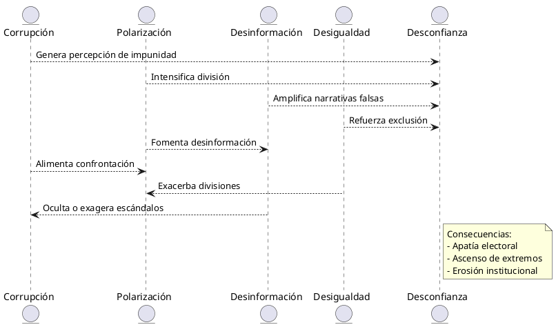
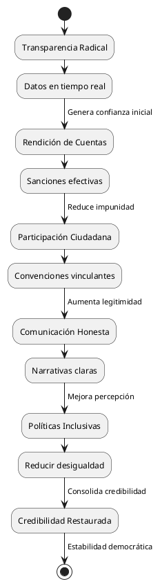

Credibilidad en la Política Española: Crisis y Consecuencias
Credibilidad en la Política Española: Crisis y Consecuencias
Introducción
La credibilidad en la política española es un tema crítico en un contexto de creciente desconfianza ciudadana, polarización y escándalos de corrupción. Según el Estudio sobre confianza en la sociedad española 2025 de la Fundación BBVA, el 72% de los españoles desconfía de los políticos, situando a España entre los países con menor confianza en sus líderes. Este post analiza el origen, evolución, desarrollo y situación actual de la credibilidad política en España, sus consecuencias y posibles soluciones, con un enfoque crítico basado en datos y tendencias hasta junio de 2025.[](https://www.ipsos.com/es-es/espana-entre-los-paises-del-mundo-que-menos-confian-en-sus-politicos-y-politicas)[](https://www.fbbva.es/noticias/estudio-opinion-publica-confianza-espana/)
Origen de la Credibilidad Política en España
La credibilidad política en España tiene sus raíces en la Transición (1975-1982), un periodo de consenso que consolidó la democracia tras la dictadura franquista. La Constitución de 1978 y el bipartidismo (PSOE-PP) generaron una percepción inicial de estabilidad y confianza. Sin embargo, esta credibilidad se basaba en una élite política homogénea y en un contexto de crecimiento económico, lo que ocultaba tensiones estructurales, como la desigualdad regional y la falta de transparencia.[](https://nuso.org/articulo/espana-un-nuevo-ciclo-politico/)[](https://www.fbbva.es/noticias/estudio-opinion-publica-cultura-politica-en-espana/)
Factores Iniciales
| Factor | Descripción | Impacto en Credibilidad |
|---|---|---|
| Consenso | Pactos de la Transición | Alta confianza inicial |
| Bipartidismo | Dominio PSOE-PP | Estabilidad percibida |
| Crecimiento | Boom económico (1980s-2000s) | Refuerzo de legitimidad |
| Centralización | Modelo estatal post-franquista | Tensiones territoriales latentes |
Evolución y Desarrollo (1982-2015)
La credibilidad política comenzó a erosionarse con el tiempo debido a varios factores:
- Corrupción estructural: Casos como Filesa (PSOE, 1990s) y Gürtel (PP, 2000s) revelaron redes de financiación ilegal, minando la percepción de integridad.
- Crisis económica (2008-2014): La recesión y el desempleo (hasta 26% en 2013) generaron frustración con las políticas de austeridad del PP y PSOE, percibidas como elitistas.[](https://eurydice.eacea.ec.europa.eu/es/eurypedia/spain/situacion-politica-y-economica)
- Movimiento 15-M (2011): La indignación ciudadana dio lugar a demandas de mayor transparencia y participación, cuestionando el bipartidismo. Esto impulsó el surgimiento de Podemos y Ciudadanos, rompiendo la hegemonía tradicional.[](https://nuso.org/articulo/espana-un-nuevo-ciclo-politico/)
- Conflicto territorial: El desafío independentista en Cataluña, especialmente tras el referéndum de 2017, polarizó el discurso político y erosionó la confianza en las instituciones centrales.[](https://nuso.org/articulo/espana-un-nuevo-ciclo-politico/)
Crítica: Fragilidad del Modelo
El modelo de la Transición, aunque exitoso inicialmente, no anticipó la necesidad de mecanismos robustos de rendición de cuentas. La politización de la justicia, como los bloqueos en la renovación del Consejo General del Poder Judicial (CGPJ), evidenció una judicialización de la política que debilitó la credibilidad institucional.[](https://www.realinstitutoelcano.org/policy-paper/espana-en-el-mundo-en-2023-perspectivas-y-desafios/)
Situación Actual (2015-2025)
En 2025, la credibilidad política en España se enfrenta a una crisis aguda, agravada por:
- Escándalos de corrupción: La Operación Delorme (2025) implicó al exministro José Luis Ábalos y a Santos Cerdán (PSOE), reforzando la percepción de impunidad. Esto se suma a casos como el de la pareja de Isabel Díaz Ayuso (PP), que generaron acusaciones de persecución política y polarización.[](https://blogs.elconfidencial.com/espana/tribuna/2024-03-14/destruccion-credibilidad-sistema-politico_3848338/)[](https://www.bbc.com/mundo/articles/cgeqdderpyxo)
- Polarización extrema: La confrontación entre PSOE y PP, exacerbada por estrategias de polarización para fidelizar votantes, ha convertido el debate político en un espectáculo de acusaciones mutuas, como se vio en sesiones parlamentarias de 2024.[](https://blogs.elconfidencial.com/espana/tribuna/2024-03-14/destruccion-credibilidad-sistema-politico_3848338/)
- Desconfianza institucional: Según la OCDE (2024), solo el 37% de los españoles confía en el gobierno, por debajo de la media de la OCDE. El Estudio sobre confianza en la sociedad española 2025 muestra que, aunque hay confianza en instituciones como el poder judicial, los políticos son vistos como el grupo menos fiable.[](https://politicalwatch.es/blog/el-37-de-los-espanoles-declara-tener-confianza-alta-en-el-gobierno/)[](https://www.fbbva.es/noticias/estudio-opinion-publica-confianza-espana/)
- Desinformación: Las redes sociales, como X, amplifican narrativas polarizantes. Un estudio de MIT (2023) señala que las noticias falsas se difunden seis veces más rápido, afectando la percepción de los líderes.[](https://blogs.elconfidencial.com/espana/tribuna/2024-03-14/destruccion-credibilidad-sistema-politico_3848338/)
- Desigualdad y exclusión: La persistente desigualdad (índice de Gini de 0.34 en 2024) alimenta la percepción de que las políticas favorecen a las élites, especialmente en regiones menos desarrolladas.[](https://eurydice.eacea.ec.europa.eu/es/eurypedia/spain/situacion-politica-y-economica)
Tabla: Estado Actual de la Credibilidad
| Indicador | Valor (2025) | Comparación OCDE | Fuente | |
|---|---|---|---|---|
| Confianza en el gobierno | 37% | Baja (43%) | OCDE 2024 | [](https://politicalwatch.es/blog/el-37-de-los-espanoles-declara-tener-confianza-alta-en-el-gobierno/) |
| Desconfianza en políticos | 72% | Alta | Fundación BBVA 2025 | [](https://www.fbbva.es/noticias/estudio-opinion-publica-confianza-espana/) |
| ESPN | 65% creen alta | Alta | Statista 2023 | [](https://es.statista.com/estadisticas/538837/confianza-en-la-politica-espana/) |
| Participación electoral | 50% (UE 2024) | Baja | Freedom House 2024 |
Diagrama: Factores de la Crisis Actual

Consecuencias de la Crisis de Credibilidad
La pérdida de credibilidad tiene impactos profundos en la sociedad española:
- Apatía electoral: La participación electoral ha disminuido, con un 50% en las elecciones europeas de 2024, reflejando alienación ciudadana.[](https://www.realinstitutoelcano.org/policy-paper/espana-en-el-mundo-en-2024-perspectivas-y-desafios/)
- Ascenso de extremos: Partidos como Vox han capitalizado la desconfianza con discursos antiestablishment, mientras que Podemos explota narrativas de desigualdad.[](https://nuso.org/articulo/espana-un-nuevo-ciclo-politico/)
- Erosión institucional: La politización del CGPJ y el Tribunal Constitucional ha dañado la percepción del Estado de derecho, afectando la influencia de España en la UE.[](https://www.realinstitutoelcano.org/policy-paper/espana-en-el-mundo-en-2023-perspectivas-y-desafios/)
- Inestabilidad política: La dificultad para formar gobiernos estables, como tras las elecciones de 2023, refleja la fragmentación y desconfianza.[](https://www.mil21.es/noticia/7728/crisis-politica/espana-sumida-en-la-incertidumbre-politica:-sera-posible-formar-un-gobierno-estable.html)
- Protestas sociales: La frustración por la desigualdad y la corrupción ha impulsado manifestaciones, como las de 2019 en Cataluña o las protestas laborales de 2023.[](https://eurydice.eacea.ec.europa.eu/es/eurypedia/spain/situacion-politica-y-economica)
Tabla: Consecuencias y Ejemplos
| Consecuencia | Descripción | Ejemplo | |
|---|---|---|---|
| Apatía electoral | Baja participación | 50% en UE 2024 | [](https://www.realinstitutoelcano.org/policy-paper/espana-en-el-mundo-en-2024-perspectivas-y-desafios/) |
| Ascenso de extremos | Crecimiento de Vox y Podemos | Elecciones 2019-2023 | [](https://nuso.org/articulo/espana-un-nuevo-ciclo-politico/) |
| Erosión institucional | Desconfianza en CGPJ y TC | Bloqueos 2023-2024 | [](https://www.realinstitutoelcano.org/policy-paper/espana-en-el-mundo-en-2023-perspectivas-y-desafios/) |
| Inestabilidad política | Gobiernos frágiles | Post-elecciones 2023 | [](https://www.mil21.es/noticia/7728/crisis-politica/espana-sumida-en-la-incertidumbre-politica:-sera-posible-formar-un-gobierno-estable.html) |
| Protestas sociales | Movilizaciones por desigualdad | Cataluña 2019, 2023 | [](https://eurydice.eacea.ec.europa.eu/es/eurypedia/spain/situacion-politica-y-economica) |
Crítica: Fallos Sistémicos
La crisis de credibilidad no es solo un problema de actores individuales, sino de un sistema político que no ha evolucionado:
- Transparencia insuficiente: Iniciativas como los portales de datos abiertos son limitadas por falta de accesibilidad y sanciones débiles.[](https://politicalwatch.es/blog/el-37-de-los-espanoles-declara-tener-confianza-alta-en-el-gobierno/)
- Rendición de cuentas selectiva: La justicia actúa contra figuras menores, pero casos de alto perfil, como el de Ábalos, generan percepción de impunidad.[](https://www.bbc.com/mundo/articles/cgeqdderpyxo)
- Polarización estratégica: Tanto PSOE como PP usan la polarización para consolidar bases electorales, sacrificando el consenso necesario para reformas estructurales.[](https://blogs.elconfidencial.com/espana/tribuna/2024-03-14/destruccion-credibilidad-sistema-politico_3848338/)
- Falta de participación: Mecanismos como la Iniciativa Legislativa Popular (ILP) son ineficaces por trabas burocráticas, limitando la voz ciudadana.[](https://politicalwatch.es/blog/el-37-de-los-espanoles-declara-tener-confianza-alta-en-el-gobierno/)
Estrategias para Reconstruir la Credibilidad
Para abordar la crisis, se proponen las siguientes estrategias:
- Transparencia radical: Implementar plataformas de datos abiertos en tiempo real, siguiendo el modelo de Estonia. Meta: 95% de datos públicos accesibles en 2027.
- Rendición de cuentas efectiva: Reformar el CGPJ para garantizar independencia y sancionar el 100% de casos de corrupción en 3 años.
- Participación ciudadana: Introducir convenciones ciudadanas y presupuestos participativos, como en Porto Alegre. Meta: 70% de ciudadanos en procesos vinculantes para 2030.
- Comunicación honesta: Reducir la retórica polarizante y priorizar mensajes claros. Meta: 80% de percepción de claridad en 2028.
- Políticas inclusivas: Reducir la desigualdad (índice de Gini a 0.30 en 10 años) mediante políticas fiscales progresivas.
Tabla: Estrategias y Metas
| Estrategia | Indicador | Meta Ideal | Ejemplo |
|---|---|---|---|
| Transparencia | % datos públicos accesibles | 95% en 2027 | Estonia e-governance |
| Rendición de cuentas | % casos corrupción sancionados | 100% en 3 años | Reforma CGPJ |
| Participación ciudadana | % ciudadanos en procesos vinculantes | 70% en 2030 | Porto Alegre |
| Comunicación | % percepción de claridad | 80% en 2028 | Campañas no polarizantes |
| Inclusión | Reducción índice de Gini | 0.30 en 10 años | Reforma fiscal progresiva |
Diagrama: Ciclo de Reconstrucción

Conclusión
La credibilidad política en España, forjada en la Transición, se ha erosionado por la corrupción, la polarización, la desinformación y la desigualdad. Las consecuencias —apatía, extremismo, inestabilidad— amenazan la democracia. Soluciones como la transparencia, la rendición de cuentas y la participación ciudadana son viables, pero requieren voluntad política y una ruptura con la polarización. Sin estas reformas, España risks a further decline in democratic quality, with implications for its role in the EU and global stage.[](https://www.realinstitutoelcano.org/policy-paper/espana-en-el-mundo-en-2023-perspectivas-y-desafios/)[](https://www.realinstitutoelcano.org/policy-paper/espana-en-el-mundo-en-2024-perspectivas-y-desafios/)
Referencias
- Dahl, R. A. (1971). Polyarchy: Participation and Opposition. Yale University Press.
- Fundación BBVA (2025). Estudio sobre confianza en la sociedad española 2025. Recuperado de https://www.fbbva.es.[](https://www.fbbva.es/noticias/estudio-opinion-publica-confianza-espana/)
- OCDE (2024). Encuesta sobre los motores de la confianza 2024: España. Recuperado de https://www.oecd.org.[](https://www.oecd.org/es/publications/2024/06/oecd-survey-on-drivers-of-trust-in-public-institutions-2024-results-country-notes_33192204/spain_800989b9.html)
- Transparency International (2023). Corruption Perceptions Index. Recuperado de https://www.transparency.org/en/cpi/2023.
- MIT (2023). The Spread of True and False News Online. Science, 359(6380), 1146-1151.
- Real Instituto Elcano (2023). España en el mundo 2023. Recuperado de https://www.realinstitutoelcano.org.[](https://www.realinstitutoelcano.org/policy-paper/espana-en-el-mundo-en-2023-perspectivas-y-desafios/)
- Political Watch (2024). Confianza en el gobierno. Recuperado de https://politicalwatch.es.[](https://politicalwatch.es/blog/el-37-de-los-espanoles-declara-tener-confianza-alta-en-el-gobierno/)
- BBC News Mundo (2025). Escándalo de corrupción en el entorno de Pedro Sánchez. Recuperado de https://www.bbc.com.[](https://www.bbc.com/mundo/articles/cgeqdderpyxo)